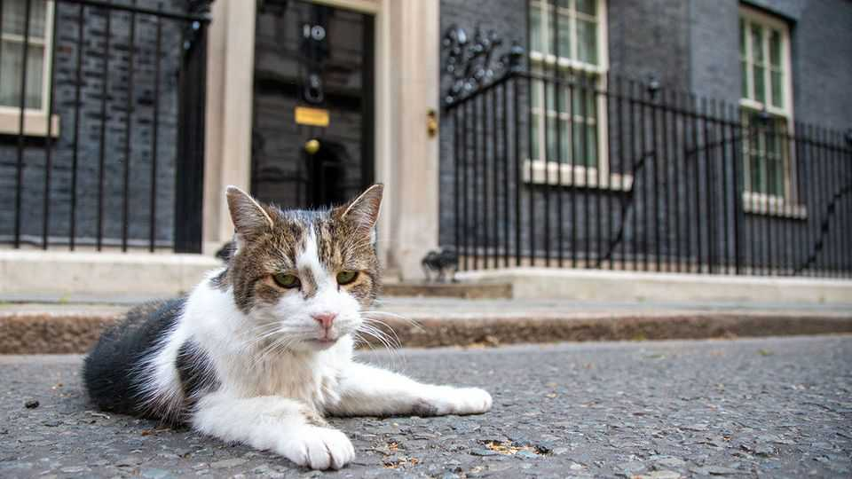

Lessons from a cat about to outlast yet another prime minister
Number 10’s canny feline can teach Andy Burnham a thing or two
July 16th 2026

Around Westminster he is known as self-serving and territorial. “A little shit”, is how one minister has described him. Larry the cat, “Chief Mouser to the Cabinet Office” (to give him his official title), has been in post for 15 years and is on his sixth prime minister. As he prepares to turn his bottom to his seventh, Larry has lessons to offer his new housemate.
Start with a good backstory. Like many an effective political operator, Larry came from the wrong side of the tracks. His redemption began when he was selected for office from Battersea Dogs and Cats Home during David Cameron’s tenure as prime minister; he was the first to get the title he now holds.
Next, either do the job well or maintain the perception that you are. Larry is streetwise and known as “a bit of a bruiser”. But his mousing instincts are much debated. Media stationed outside the famous black door have confirmed two recent kills. Behind closed doors there is scepticism. His official government page notes his solution to the rodent problem remains in the “tactical planning stage” and that he often tests “antique furniture for napping quality”.
Third, be media-savvy. Larry keeps journalists at tail’s length, slinking away from any who approach. But he knows how to exploit media opportunities, having photo-bombed world leaders like Volodymyr Zelensky of Ukraine. In 2019 he stole headlines by sheltering from rain under “The Beast”, Donald Trump’s armoured limousine.
Finally, suffer no challengers. A long-running feud with Palmerston, the former chief mouser at the Foreign Office, culminated in a fight. Larry reportedly lost a collar; Palmerston hurt his ear.
Such canny political manoeuvring has blessed Larry with public-approval ratings that most politicians would sell their cat for. He has over 900,000 followers on his unofficial X account and is frequently sent gifts from fans.
But the whiskers are greying. In cat years, Larry is about 92 (Winston Churchill was 80 when he left office). Unlike many British leaders, the chief mouser looks set to exit on his own terms.■
For more expert analysis of the biggest stories in Britain, sign up to Blighty, our weekly subscriber-only newsletter.